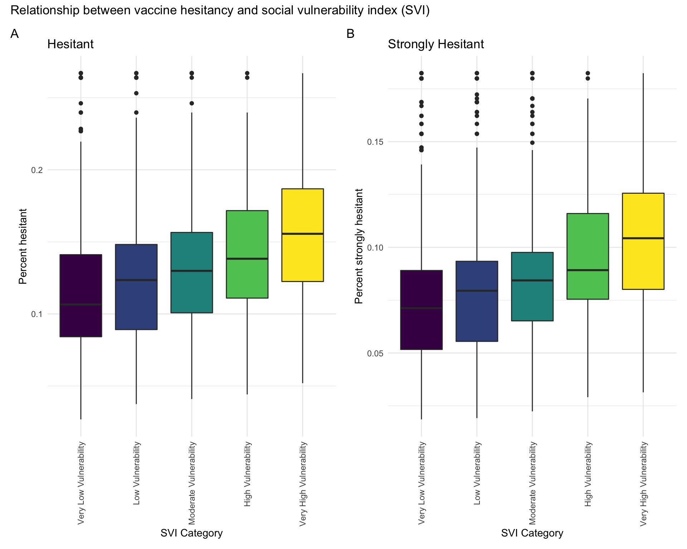

The CDC provides data on vaccine hesitancy at the state level using the U.S. Census Bureau’s Household Pulse Survey (HPS). Understaninding trends vaccine hesitancy is a key step in understanding limitations to vaccine uptake adross the nation. Using this dataset, we will describe trends in vaccine hesitancy across the United States and identify factors that are associated with vaccine hesitancy.
Participants were classified as “hesitant” if they reported that they would “probably not” or “definitely not” get a COVID-19 vaccine. Below is a plot of estimated percent hesitant by state. The states with the greatest percentage of “hesitant” participants were Montana, Wymoing, and Alaska, and the least hesitant states were New Jersey, Massachusetts, and Vermont. New York similarly had low vaccine hesitancy.
pt1 <- read_csv("hesitant_vax_data_pt1.csv")
pt2 <- read_csv("hesitant_vax_data_pt2.csv")
pt3 <- read_csv("hesitant_vax_data_pt3.csv")
pt4 <- read_csv("hesitant_vax_data_pt4.csv")
pt5 <- read_csv("hesitant_vax_data_pt5.csv")
pt6 <- read_csv("hesitant_vax_data_pt6.csv")
pt7 <- read_csv("hesitant_vax_data_pt7.csv")
data_all <- bind_rows(pt1, pt2, pt3, pt4, pt5, pt6, pt7)
data_all = data_all %>%
mutate(
svi_category = as.factor(svi_category),
svi_category = factor(svi_category, levels = c("Very Low Vulnerability", "Low Vulnerability", "Moderate Vulnerability", "High Vulnerability", "Very High Vulnerability"))) %>%
filter(!is.na(svi_category))
data_all %>%
mutate(state = fct_reorder(state, estimated_hesitant)) %>%
plot_ly(y = ~estimated_hesitant, color = ~state, type = "box", colors = "viridis") %>%
layout(title = 'Estimated percent hesitant by state', xaxis = list(title = 'State'),
yaxis = list(title = 'Estimated percent hesitant'))Participants were classified as “strongly hesitant” if they reported that they would “definitely not” get a COVID-19 vaccine. Below is a plot of estimated percent “strongly hesitant” by state. Montana, Wymoing, and Alaska remain the states with the greatest hestitancy, and the least hesitant states are Hawaii, Connecticut, and Vermont.
data_all %>%
mutate(state = fct_reorder(state, estimated_strongly_hesitant)) %>%
plot_ly(y = ~estimated_strongly_hesitant, color = ~state, type = "box", colors = "viridis") %>%
layout(title = 'Estimated percent strongly hesitant by state', xaxis = list(title = 'State'),
yaxis = list(title = 'Estimated strongly percent hesitant'))We hypothesized that social vulnerability would be a predictor of vaccine hesitancy. Social vulnerability index categories include “Very Low Vulnerability”, “Low Vulnerability”, “Moderate Vulnerability”, “High Vulnerability”, and “Very High Vulnerability.” Below is a plot of vaccine hesitancy percent vs. social vulnerability index category. Panel A shows “hesitancy” and panel B shows “strong hesitancy.” Both plots show a trend towards increasing vaccine hesitancy with increasing social vulnerability.
hesitant_plot = data_all %>%
ggplot(aes(x = svi_category, y = estimated_hesitant, fill = svi_category)) +
geom_boxplot() +
theme(axis.text.x = element_text(angle = 90, vjust = 0.5, hjust = 1)) +
labs(
title = "Hesitant",
x = "SVI Category",
y = "Percent hesitant") +
theme(legend.position = "none")
strongly_hesitant_plot = data_all %>%
ggplot(aes(x = svi_category, y = estimated_strongly_hesitant, fill = svi_category)) +
geom_boxplot() +
theme(axis.text.x = element_text(angle = 90, vjust = 0.5, hjust = 1)) +
labs(
title = "Strongly Hesitant",
x = "SVI Category",
y = "Percent strongly hesitant") +
theme(legend.position = "none")
hesitancy_plots = hesitant_plot + strongly_hesitant_plot
hesitancy_plots + plot_annotation(
title = "Relationship between vaccine hesitancy and social vulnerability index (SVI)",
tag_levels = 'A'
)
Lastly, we performed a linear regression analysis to assess whether there was a statistically significant relationship between social vulnerability index and vaccine hesitancy. We hypothesized that race would be a confounder and therefore we adjusted for percent non-Hispanic white.
fit = lm(estimated_hesitant ~ social_vulnerability_index_svi + percent_non_hispanic_white, data = data_all)
broom::tidy(fit) %>%
mutate("p-value" =
case_when(p.value < 0.001 ~ "<0.001")) %>%
select(term, estimate, "p-value") %>%
knitr::kable(
caption = "Percent hesitant vs. social vulnerability index"
)| term | estimate | p-value |
|---|---|---|
| (Intercept) | 0.0474161 | <0.001 |
| social_vulnerability_index_svi | 0.0728126 | <0.001 |
| percent_non_hispanic_white | 0.0639839 | <0.001 |
fit2 = lm(estimated_strongly_hesitant ~ social_vulnerability_index_svi + percent_non_hispanic_white, data = data_all)
broom::tidy(fit2) %>%
mutate("p-value" =
case_when(p.value < 0.001 ~ "<0.001")) %>%
select(term, estimate, "p-value") %>%
knitr::kable(
caption = "Percent strongly hesitant vs. social vulnerability index"
)| term | estimate | p-value |
|---|---|---|
| (Intercept) | 0.0286596 | <0.001 |
| social_vulnerability_index_svi | 0.0521787 | <0.001 |
| percent_non_hispanic_white | 0.0418530 | <0.001 |
The estimates for social vulnerability index are positive and statistically significant for both the “hesitant” and “strongly hesitant” outcomes. This suggests that there is a small, positive, statistically significant relationship between vaccine hesitancy and social vulnerability index.